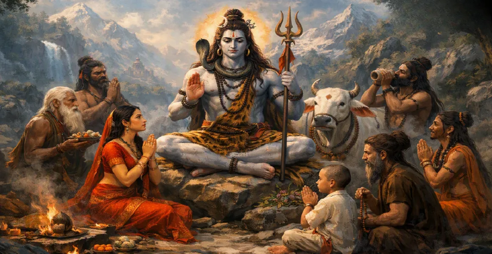

Nandi, the Eternal Servant
চিরসেবক নন্দী
नंदी, शाश्वत सेवक
नंदी एक प्रतीक के रूप में शिव के निवास की पवित्र दहलीज पर खड़े हैं सेवा, निष्ठा और पूर्ण समर्पण की। उनकी भक्ति का प्रतिनिधित्व करता है सदैव बने रहने का आदर्श महादेव की ओर मुड़ गया।

The sacred traditions of Lord Shiva are filled with devotees whose lives became expressions of unwavering faith. Some were kings, some sages, some humble worshippers, and some were beings whose devotion transformed the course of their lives.
उनकी कहानियाँ सिखाती हैं कि शिव भक्ति को स्थिति से नहीं मापते, धन या बाहरी दिखावट. सच्चे हृदय से महादेव का स्मरण, समर्पण और विश्वास उनकी कृपा की ओर एक पवित्र मार्ग बन सकते हैं।
Across the sacred narratives, devotion appears in many forms. These figures remind us that the deepest offering is not always material. It is the heart that remembers Shiva with sincerity.
नंदी एक प्रतीक के रूप में शिव के निवास की पवित्र दहलीज पर खड़े हैं सेवा, निष्ठा और पूर्ण समर्पण की। उनकी भक्ति का प्रतिनिधित्व करता है सदैव बने रहने का आदर्श महादेव की ओर मुड़ गया।
रावण से जुड़ी परंपराओं में एक शक्तिशाली सबक है: अत्यधिक भक्ति अत्यधिक गर्व के साथ सह-अस्तित्व में रह सकती है। उसका रिश्ता शिव के साथ हमें याद दिलाता है कि आध्यात्मिक शक्ति को विनम्रता द्वारा निर्देशित किया जाना चाहिए।
मार्कंडेय को एक बाल भक्त के रूप में याद किया जाता है जिसकी शिव में आस्था थी भय से भी अधिक मजबूत हो गया। उनकी कहानी को एक के रूप में संजोया जाता है महादेव की रक्षा करने वाली कृपा का स्मरण।
कन्नप्पा की कहानी अपनी असाधारण सादगी के लिए याद की जाती है और तीव्रता. उनकी आराधना हृदय से नहीं बल्कि हृदय से उत्पन्न हुई थी औपचारिक शिक्षा, शिव के प्रति सच्चे प्रेम की शक्ति को दर्शाती है।
ऋषि बार-बार ध्यान के माध्यम से शिव की ओर उन्मुख होते हैं, तपस्या, पूजा और स्मरण. उनका जीवन उस भक्ति को दर्शाता है आध्यात्मिक अनुभूति की दिशा में एक अनुशासित यात्रा बन सकती है।
शक्तिशाली शासक भी शिव के पास विनम्रता से आये। उनकी कहानियाँ हमें याद दिलाती हैं कि सांसारिक सत्ता अस्थायी है, जबकि ईश्वर के समक्ष समर्पण हृदय को रूपांतरित कर सकता है।
शिव की पवित्र परंपराएँ सरल भक्त का बार-बार सम्मान करती हैं: जो उपलब्ध है उसे सच्चे हृदय से अर्पित करता है। भक्ति सामान्य कृत्यों को एक पवित्र अर्थ देती है।
शिव के प्रति समर्पण कमजोरी नहीं है। यह करने की इच्छा है अपने डर, घमंड और अनिश्चितता को महादेव और विश्वास के सामने रखें उच्च पथ.
शिव का नाम दोहराना एक सरल द्वार बन सकता है स्मरण. भक्त के लिए, पवित्र नाम भटकन लाता है मन वापस महादेव की ओर करो।
शिव के साथ भक्त का रिश्ता विशेष रूप से अनमोल हो जाता है कठिनाई के दौरान. महादेव का स्मरण करने से संकट दूर हो सकते हैं प्रार्थना, धैर्य और आंतरिक शक्ति का क्षण।
सच्ची भक्ति धीरे-धीरे आचरण बन जाती है। जो भक्त स्मरण करता है शिव करुणा, सत्य, संयम और सम्मान के साथ रहना चाहते हैं पवित्र जीवन के लिए.
शिव के भक्तों की अनेक कहानियाँ अंततः एक पर ही लौट आती हैं पवित्र सिद्धांत: जब हृदय ईमानदारी से महादेव की ओर मुड़ता है, भक्ति स्वयं परिवर्तन का मार्ग बन जाती है।
प्रार्थना, ध्यान के माध्यम से शिव की याद को जीवित रखें मंत्र और उनकी उपस्थिति की सरल जागरूकता।
अपने कार्यों, कठिनाइयों और कृतज्ञता को महादेव को अर्पित करें केवल बाहरी पुरस्कार चाहने के बजाय ईमानदारी।
भरोसा रखें कि सच्ची भक्ति तब भी दिल को ताकत दे सकती है आगे का रास्ता अभी साफ नहीं है.
आचरण में भक्ति प्रकट हो: करुणा, सत्यता, धैर्य, विनम्रता और दूसरों की सेवा.
भक्त सभी प्राणियों में शिव की उपस्थिति देखता है। इसलिए दया, करुणा और विनम्रता के साथ दूसरों की सेवा करें महादेव के प्रति भक्ति की एक और सुंदर अभिव्यक्ति बन जाती है।
किसी की आध्यात्मिक यात्रा जितनी बड़ी हो जाती है, उतनी ही महत्वपूर्ण हो जाती है विनम्रता बन जाती है. भक्त को हर शक्ति याद आती है, आशीर्वाद और उपलब्धि अंततः महादेव की कृपा पर निर्भर करती है।
A devotee does not ask only for worldly success. The deepest prayer is often for remembrance: to keep the name of Shiva alive in the heart through joy, sorrow, success and uncertainty.
"हे महादेव, मेरे मन को अपने स्मरण में रखें, मेरे कार्य तेरे नाम के योग्य हैं, और मेरा हृदय तेरे चरणों के आगे नम्र है।"
🔱 Om Namah Shivaya 🔱भक्ति मार्ग स्वत: ही याद की ओर ले जाता है। जारी रखें अगले पृष्ठ पर जानें भगवान शिव के पवित्र मंत्रों और उनकी भक्ति के बारे में महादेव को उनके नाम से स्मरण करने का महत्व एवं अभ्यास
📿 भगवान शिव मंत्रों का अन्वेषण करें